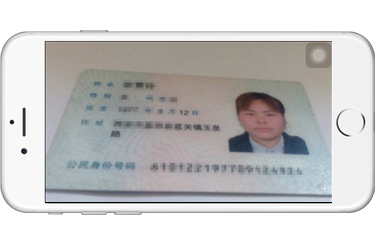
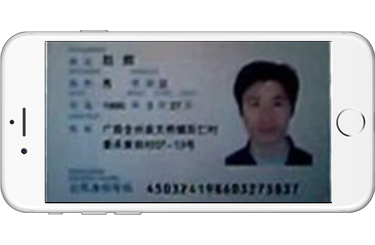
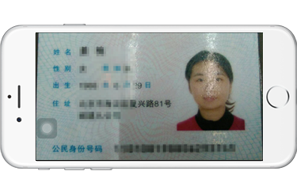
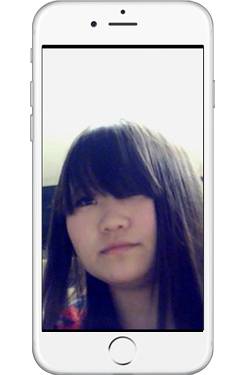
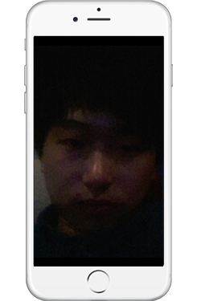
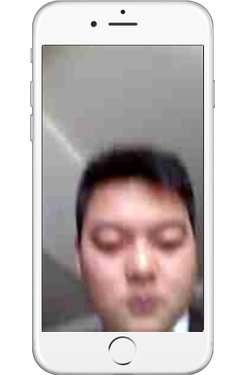

拍照注意事项
一.拍摄证件照的注意事项：
（1），请保证俯视水平拍摄，如若斜角度拍摄，照片梯度形变，会影响照片的识别。

（2）.请保证拍摄的照片清晰，不模糊。

（3）.请保证照片不反光。

二.拍摄人脸的注意事项：
（1）.请保证脸部完整，且无遮挡物（头发或其他），保证拍摄到完整的脸部轮廓。

（2）.请保证光线正常，避免侧光，强光，或光线偏暗的拍摄环境。

（3）.在拍摄过程中，应避免动态模糊，拍摄得到的照片需要保证清晰。
